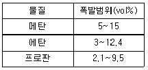
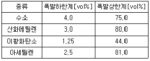
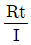
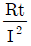
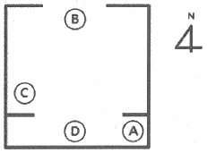
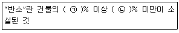
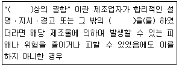
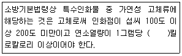

화재감식평가기사 (2019-09-21 기출문제)
1과목: 화재조사론
1. 화재조사 기자재 중 안전장비에 포함되지 않는 것은?
- 손전등
- 안전고리
- 안전화
- 보호용 장갑
(정답률: 80%)

2. 화재현장 금속기둥에서 보이는 만곡현상을 관찰하여 화염의 방향을 판단할 때 먼저 검사해야 할 사항이 아닌 것은?
- 비교하는 기둥들이 유사한 하중을 받고 있는 것인지를 검사한다.
- 비교하는 기둥들의 설치각도가 직각을 이루고 있는지를 검사한다.
- 비교하는 기둥들이 같은 재질과 두께로 만들어진 것인지를 검사한다.
- 화재현장의 하중을 받는 구조물들은 화염을 먼저 받게 되는 면의 반대 방향으로 기울어지는 만곡을 검사한다.
(정답률: 80%)
3. 화염의 확산에 대한 설명으로 틀린 것은?
- 순방향 확산은 전방의 연료를 화염이 직접 접촉하기 때문에 따르게 일어난다.
- 경사트렌치 내에서의 하향 확산과 같은 급속한 확산 효과를 트렌치 효과라 한다.
- 역방향 확산은 화염이 전방의 연료를 가열하는 데 제한적으로 느리게 일어난다.
- 경사면 화재확산은 화염 윗부분의 가연성 표면에 대한 예열, 전도, 대류, 복사에 의한 복합적인 효과가 일어난다.
(정답률: 56%)
4. 분해연소를 하는 가연물은?
- 숯
- 목재
- 코크스
- 파라핀
(정답률: 75%)
5. 연소현상에 대한 설명으로 옳은 것은?
- 철에 녹이 스는 것은 연소반응의 일종이다.
- 종이가 누렇게 변색되는 것은 연소반응이다.
- 연소는 빛과 열을 수반하는 급격한 산화반응이다.
- 니크롬선을 사용한 전열기에 전기가 인가되었을 때 니크롬선이 빛과 열을 내는 것은 연소반응이다.
(정답률: 90%)
6. 메탄 40vol%, 에탄 30vol%, 프로판 30vol%의 조성으로 혼합되어 있는 기체의 공기 중 폭발하한계는 약 몇 vol%인가?

- 2.5
- 3.1
- 4.3
- 5.7
(정답률: 67%)
7. 흡입 시 기도의 알칼리성 조직을 중화시켜 기도의 부종 또는 경련으로 사망에 이르게 하는 연소생성물은?
- 불화수소(HF)
- 일산화탄소(CO)
- 염화수소(HCI)
- 시안화수소(HCN)
(정답률: 55%)
8. 방화죄가 성립하지 않은 것은?
- 사람이 현존하는 집에 불을 놓아 재산피해 발생
- 공용으로 사용되는 차량에 불을 놓아 사망사고 발생
- 자기 소유의 차량에 불을 놓아 주변으로 화재를 확대시킴
- 쓰레기 소각 중 불티에 의한 화재가 발생하여 재산피해 발생
(정답률: 85%)
9. 액체연료의 기상(氣象) 화염 확산에 대한 일반적인 속도는?
- 1~2cm/s
- 10~20cm/s
- 1~2m/s
- 10~20m/s
(정답률: 61%)
10. 물질의 융점으로 옳은 것은?
- 납:327℃
- 구리:1540℃
- 파라핀:660℃
- 알루미늄:54℃
(정답률: 70%)
11. 발화부 주변의 일반적인 연소현상에 대한 설명으로 틀린 것은?
- 발화부를 향해 소락되거나 도괴된다.
- 발화부와 가까울수록 탄화심도가 깊다.
- 목재표면에 발생하는 균열은 발화부와 가까울수록 골이 넓고 굵어진다.
- 발화부는 비교적 밝은 색을 띠며 발화부와 멀어질수록 어두운 빛을 나타낸다.
(정답률: 52%)
12. 메탄가스가 밀폐공간에서 완전연소되어 폭발할 경우에 대한 설명으로 틀린 것은?
- 압력이 증가한다.
- 에너지가 생성된다.
- 충격파가 초음속인 폭연이다.
- 반응물과 생성물의 몰수가 같다.
(정답률: 74%)
13. 가연물의 가연성이 높아지는 조건이 아닌 것은?
- 발열량이 클 것
- 열전도율이 클 것
- 산소와의 친화력이 클 것
- 활성화 에너지가 적을 것
(정답률: 81%)
14. 수직면과 수평면 모두에서 나타나는 3차원 화재패턴은?
- V 패턴
- Pour 패턴
- U 패턴
- 잘린 원추 패턴
(정답률: 70%)
15. 화재조사 시 관계자에 대한 질문 요령으로 틀린 것은? (단, 관계자란 화재조사 및 보고규정상 용어의 정의에 따른다.)
- 일문일답 형식으로 계통적 순서에 따라 질문하고 청취한다.
- 관계자의 진술내용을 신속하게 기록하며, 상황에 따라서는 녹음(녹취)도 필요하다.
- 허위진술을 방지하기 위해 질문을 시작할 때 상대방의 성명, 연령, 주소 등을 청취하고 기재한다.
- 발화원인과 관계가 있는 것 같은 사항에 대한 질문에 대해서는 상대방에게 예비지식을 주면서 질문한다.
(정답률: 87%)
16. 소방기본법령상 보일러 등의 위치, 구조 및 관리와 화재예방을 위하여 불의 사용에 있어서 지켜야 하는 사항을 위반한 것에 해당하는 것은?
- 실내 보일러가 콘크리트바닥 위에 설치됨
- 보일러와 벽, 천장 사이의 거리는 0.3미터를 유지하여 설치됨
- 등유 탱크가 보일러 본체로부터 수평거리 1.2미터의 거리에 설치됨
- 가스보일러가 설치된 장소에는 가스누설경보기가 설치됨
(정답률: 66%)
17. 화재조사 및 보고규정상 화재인명 피해조사에 대한 사상자 분류기준으로 옳은 것은?
- 경상자는 입원치료를 필요로 하지 않은 부상자도 포함
- 화재로 인하여 5일 이내 사망한 자를 당해 사망자로 포함
- 중상자는 전치 10주 이상의 입원치료를 필요로 하는 부상자
- 경상자는 전치 10주 이하의 입원치료를 필요로 하는 부상자
(정답률: 80%)
18. 가연물의 최소착화에너지에 영향을 미치는 요인에 대한 설명으로 옳은 것은?
- 입력이 높을수록 최소착화에너지는 높아진다.
- 온도가 높을수록 최소착화에너지는 낮아진다.
- 가연물의 종류에 관계없이 최소착화에너지는 일정하다.
- 혼합된 공기의 산소농도에 관계없이 최소착화에너지는 일정하다.
(정답률: 81%)
19. 액체가연물에 의해 발생하는 화재패턴에 관한 설명으로 틀린 것은?
- 연소 시 증발잠열에 의해 도넛패턴이 발생한다.
- 레인보우 이펙트가 관찰된다면 액체가연물을 사용한 고의적 착화로 판단한다.
- 고스트 마크는 플래시 오버와 같은 강력한 화재열기 속에서도 발생할 수 있으므로 주의를 요한다.
- 포어패턴은 액체가연물이 바닥에 뿌려진 경우 뿌려진 부분과 뿌려지지 않은 부분의 탄화경계 흔적을 말한다.
(정답률: 60%)
20. 소방기본법령상 소방본부에서 갖추어야 할 화재조사 장비 및 시설 중 추가 권장 장비가 아닌 것은?
- 고속카메라세트
- 접점저항계
- 직류전압전류계
- 적외선열상카메라
(정답률: 55%)
2과목: 화재감식론
21. 자동차 화재조사를 위해 수집해야 할 자료로 가장 거리가 먼 것은?
- 구입 및 개조 후 부착한 장치의 유무 및 자료
- 자동차검사시의 정기점검 정비 기록부
- 자동차 차량검사증 및 차량상풍명
- 피해자의 운전경력 증명서
(정답률: 82%)
22. 다음 표에 있는 가스를 위험도가 큰 것부터 순서대로 나열한 것으로 옳은 것은?

- 아세틸렌＞산화에틸렌＞이황화탄소＞수소
- 아세틸렌＞산화에틸렌＞수소＞이황화탄소
- 이황화탄소＞아세틸렌＞수소＞산화에틸렌
- 이황화탄소＞아세틸렌＞산화에틸렌＞수소
(정답률: 65%)
23. 방화가 의심되는 특징으로 옳지 않은 것은?
- 여러 곳에서 독립적인 발화흔적
- 화재현장의 타 범죄 발생증거 및 연소촉진물의 존재
- 귀중품 반출 및 동일건물에서의 재차화재
- 화재발생 시 관계인 부재
(정답률: 85%)
24. 다음 중 연소범위가 가장 넓은 것은?
- 에틸렌
- 암모니아
- 메탄
- 프로판
(정답률: 46%)
25. 자연발화가 발생하기 용이한 조건으로 옳지 않은 것은?
- 주변 온도가 높을수록 자연발화가 용이하다.
- 충분한 산소 공급을 위해 더미를 바닥에 넓게 깔아 놓은 형태일 때 자연발화가 용이하다.
- 지속적인 온도 상승이 발화에 이를 때까지 충분한 반응물질이 있어야 한다.
- 식물성 기름은 다공성 물질에 흡착되었을 경우 자연발화가 용이하다.
(정답률: 66%)
26. 화재현장 보존이 중요시되는 이유가 아닌 것은?
- 화재의 발화지점을 판정하는데 주요한 증거가 되기 때문이다.
- 원활한 피해복구를 위해 보존해야 한다.
- 화재현장 훼손은 물증의 증거적 가치를 손상시키기 때문이다.
- 화재의 원인과 책임 소재를 판정하기 위한 증거가 되기 때문이다.
(정답률: 70%)
27. 메탄 4g을 완전연소시키면 이산화탄소 몇 mol이 생성되는가?
- 2
- 1
- 0.5
- 0.25
(정답률: 56%)
28. 다음 중 화재 열기로 인하여 탄화균열이 발생하는 물질은?
- 금속재
- 목재
- 석재
- 유리
(정답률: 65%)
29. 가스계량기의 측정원리에 의한 분류 중 산업용으로 사용되는 추측식 가스계량기로 옳은 것은?
- 터빈형
- 드럼(drum)형
- 회전식(루트식)
- 막식(다이어프램식)
(정답률: 67%)
30. 선박화재의 현장기록에 대한 설명으로 틀린 것은?
- 선박화재의 현장기록에 대한 요건은 일반적으로 구조물과 차량에 대한 것과 거의 모든 부분에서 다른 특수성을 갖는다.
- 선박화재의 현장기록은 가능한 한 선박이 현장의 제 위치에 있을 때 조사되어야 한다.
- 화재가 발생한 선박이 현 위치에서 손상되었는지, 화재 이후 위치기 바뀌었는지 확인하여야 한다.
- 선박화재의 현장기록은 폐기물처리장, 수리시설, 정박지, 소형 선박수리소 등에서 일부를 기록해야 하는 경우가 있을 수 있다.
(정답률: 56%)
31. 다음 중 담뱃불에 의해 착화가 가능한 물질은?
- 유리(glass)
- 폴리에틸렌
- 톱밥
- 아크릴
(정답률: 84%)
32. 전기저항을 R, 전류를 I, 통전시간을 t라고 했을 때 전류에 의한 발생열의 계산식은?
- IRt

- I2Rt

(정답률: 62%)
33. 우리나라 임야화재의 발생 건수가 가장 많은 계절은?
- 봄
- 여름
- 가을
- 겨울
(정답률: 78%)
34. 화재조사 시 나타날 수 있는 나트륨의 연소 특징으로 옳은 것은?
- 화재초기의 불꽃색은 보라색이다.
- 출화 부근에 남아 있는 물을 리트머스 시험지로 조사하면 산성을 나타낼 가능성이 크다.
- 나트륨이 연소되고 남은 표면에는 끈적끈적한 흰색의 수산화나트륨이 남아있을 수 있다.
- 물을 강하게 분해하여 다량의 아세틸렌을 발생시켜 공기와 접촉하여 폭발적으로 연소한다.
(정답률: 64%)
35. 내연기관 자동차의 구동방식에 의한 분류에 속하지 않는 것은?
- AW CAR
- FR CAR
- RR CAR
- AR CAR
(정답률: 60%)
36. 성냥의 연소현상에 대한 설명으로 틀린 것은?
- 성냥의 발화구조는 성냥개비의 두약 부분과 용기의 측약 부분이 서로 마찰 시 먼저 측약 부분의 적린이 발화하고 그 발화에너지에 의해 두약 부분이 폭발적으로 연소하는 구조이다.
- 성냥의 연소온도는 불꽃의 상태에 따라 다르지만 발화한 시점에서 500℃. 정상연소 불꽃에서 1500~1800℃이며, 치화상태(맹렬한 연소상태)에서 최고온도는 두약 부분이 700℃이다.
- 성냥의 발화온도는 일반적으로 100~200℃이며, 제조사별로 크게 차이가 없어 일정하다.
- 일반적으로 성냥 1개비의 연소시간은 수직상방향에서 평균 43초, 대각선 상방향에서 35초 정도가 소요되는 것으로 알려져 있다.
(정답률: 52%)
37. 선박용 기자재의 특성으로 옳지 않은 것은?
- 내진성, 내식성
- 유지보수 용이성
- 가연성
- 선체운동에 대한 충분한 적응성
(정답률: 74%)
38. 방화의 동기별 유형에서 방화로 분류되지 않는 것은?
- 피로로 인한 과실
- 밤죄 전ㆍ후 증거인멸
- 보험사기 등 경제적 이득
- 정신질환
(정답률: 85%)
39. 다음 수종 중 내화력이 가장 강한 수종은?
- 소나무
- 아까시나무
- 벚나무
- 동백나무
(정답률: 60%)
40. 전기다리미에 200V의 전압을 가했더니 3A의 전류가 흘렀다. 이 때 전기다리미가 소비하는 전력은 몇 W인가?
- 150
- 300
- 400
- 600
(정답률: 78%)
3과목: 증거물관리 및 법과학
41. 화재현장의 증거물에 대한 사진 촬영 방법으로 옳지 않은 것은?
- 발견 당시의 모습 그대로 촬영해야 한다.
- 현장에서 수거의 절차가 명확하도록 촬영해야 한다.
- 사진의 원본성이 유지되어야 한다.
- 필요 시 촬영하기 좋은 위치로 이동시켜 촬영한다.
(정답률: 85%)
42. 화재조사 및 보고규정상 질문기록서에 기입할 내용으로 틀린 것은?
- 화재발생 일시 및 장소
- 질문일시 및 질문장소
- 답변자의 주민등록번호(외국인의 경우, 외국인등록번호)
- 화재번호
(정답률: 72%)
43. 화재조사 및 보고규정상 화재조사서류에 대한 설명으로 옳지 않은 것은?
- 화재조사서류 작성 시 소실정도는 전소, 반소, 부분소, 즉소로 구분한다.
- 화재조사서류 작성은 화재에 필요한 정보자료를 얻고자 하는 데 있다.
- 화재조사서류는 화재조사의 결과를 기록하는 문서이다.
- 화재조사서류는 민ㆍ형사상 유력한 증거자료로 활용될 수 있다.
(정답률: 73%)
44. 타임라인과 마인트매핑에 대한 설명으로 옳지 않은 것은?
- 상대적시간은 추정을 근거로 한다.
- 타임라인은 증거와 정보의 조합이고, 마인트매핑은 사건이 일어난 시간의 재구성이다.
- 타임라인의 정확성은 가설의 신뢰도를 높여 준다.
- 마인트매필은 수집된 정보를 바탕으로 객관적 사실을 조합하는 과정이다.
(정답률: 81%)
45. 다음 중 목재 탄화물에 관한 설명으로 거리가 먼 것은?
- 탄화심도는 종종 화재의 지속시간을 측정하는데 사용된다.
- 탄화심도는 탄화 블리스터(Blister)의 중앙에서 측정된다.
- 탄화속도는 목재가 열원을 향하는 방향에 영향을 받지 않는다.
- 엘리게이터(alligator)는 목재 탄화패턴의 하나다.
(정답률: 76%)
46. 화재현장 촬영 시의 유의사항으로 옳지 않은 것은?
- 각 방위별로 출화의 방향성에 착안하여 구조물의 형태를 확인하여 촬영한다.
- 발화건물과 인접 도로 및 주변 건물과 경계선을 파악하여 촬영한다.
- 높은 곳에서 전체적으로 연소 확대 상황을 관찰하면서 촬영한다.
- 너무 많은 사진 자료는 혼란을 야기하므로 사진 촬영은 발화대상물에만 초점을 맞추어 촬영한다.
(정답률: 85%)
47. 화재현장 증거물의 오염을 야기하는 행위에 대한 설명으로 틀린 것은?
- 수집과정에서 조사자의 잘못된 취급
- 현장통제 미흡으로 야기되는 불특정인의 현장출입
- 연소되거나 탄화된 물체와의 이질적 혼합
- 촉진제 확인을 위한 밀봉조치로 환기 불량
(정답률: 74%)
48. 화재현장에서 증거물을 수집하는 방법으로 옳은 것은?
- 고체 촉진제 증거물을 수집할 경우 유리병은 적당하지 않다.
- 유사한 액체증거물을 수집할 경우 하나의 용기를 사용한다.
- 휘발성 증거물을 수집할 경우 일반 비닐봉지(폴리에틸렌)를 사용한다.
- 액체증거물을 보관하는 경우 용기를 완전히 밀봉해야 한다.
(정답률: 84%)
49. 사후에 혈액이 중력의 작용으로 몸의 저부에 있는 모세혈관 내로 침강하여 외 표피층에 착색이 되어 나타나는 현상은?
- 매(煤)
- 시반(屍班)
- 부종(浮腫)
- 울혈(鬱血)
(정답률: 84%)
50. 화상에 대한 설명으로 틀린 것은?
- 화염에 의한 손상은 화상으로 볼 수 있으나 복사열에 의한 손상은 화상으로 볼 수 없다.
- 넓은 의미로 볼 때 고열이 피부에 작용하여 일어나는 국소적 및 전신적 장애를 화상이라 한다.
- 뜨거운 기체나 액체에 의한 손상을 탕상이라고 하며, 이 또한 화상으로 볼 수 있다.
- 화상이나 탕상으로 인한 사망을 일반적으로 화상사라고 한다.
(정답률: 86%)
51. 화상성 쇼크라고도 하며 화상을 입고 나서 상당시간 경과한 후에 증상이 발현되어 2~3일 후에 사망하게 되는 경우를 지칭하는 용어로 옳은 것은?
- 속발성 쇼크
- 자극성 쇼크
- 원발성 쇼크
- 저체액성 쇼크
(정답률: 64%)
52. 화재증거물수집관리규칙상의 증거물 수집 시 주의사항에 대한 설명으로 옳지 않은 것은?
- 증거물의 소손 또는 소실 정도가 심하여 증거물의 일부분 또는 전체가 유실될 우려가 있는 경우는 증거물을 밀봉하여야 한다.
- 증거물을 수집할 때는 휘발성이 높은 것에서 낮은 순서로 진행해야 한다.
- 증거물의 수집 장비는 증거물의 종류 및 형태에 따라 적절한 구조의 것이어야 한다.
- 증거물이 파손될 우려가 있는 경우에는 충격금지 및 취급방법에 대한 주의사항을 증거물의 포장 내측에 적절하게 표기하여야 한다.
(정답률: 73%)
53. 다음 중 화상의 위험도에 대한 설명으로 옳지 않은 것은?
- 어린이는 같은 정도의 범위라도 어른보다 더 위험하다.
- 국소적인 화상의 경우가 화상면적이 넓은 경우보다 더 치명적이다.
- 노인은 회복이 지연되거나 합병증이 일어나기 쉽다.
- 주요 장기에 질환이 있는 경우 정상인보다 위험하다.
(정답률: 84%)
54. 인화성액체(촉진제)에 대한 설명으로 옳지 않은 것은?
- 화재현장에서 인화성액체가 발견되었다면, 방화 외의 다른 가능성을 배제한다.
- 탐지견은 인화성액체를 감지하는 데 도움을 줄 수 있다.
- 인화성액체의 확인을 위해 대조시료를 채취한다.
- 일반적으로 가솔린, 등유, 경유, 시너 등이 촉진제로 사용된다.
(정답률: 82%)
55. 일반적으로 건강한 성인의 경우 혈액 내 일산화탄소 포화도의 생리학적 영향으로 옳지 않은 것은?
- 10~20% : 약한 두통, 피부형관의 팽창
- 20~30% : 극심한 두통, 과도한 맥박
- 30~40% : 어지럼, 의식장애, 구토
- 40~50% : 호흡정지, 사망
(정답률: 47%)
56. 화재현장 증거물의 수집 기본원칙에 대한 설명으로 틀린 것은?
- 맨손으로 만지지 말고 일회용 장갑을 착용하여 오염을 최소화한다.
- 증거물에 부착된 오염물질을 강제로 털어 내거나 떼어 내려고 하지 않도록 한다.
- 증거물 수집은 가능한 한 빨리 수거하도록 한다.
- 다른 곳에서 발견된 동일한 물질은 같은 용기에 넣어 수거한다.
(정답률: 83%)
57. 사진촬영 시 노출 및 초점에 대한 설명으로 옳지 않은 것은?
- 화재현장은 기본적으로 자연적 광량이 충분하여 초점을 맞추기가 쉽다.
- 화재가 발생한 구조물에 대하여 노출설정이 잘못되면 현장설명이 달라질 수도 있다.
- 조리개의 값을 높일 경우 피사 심도를 낮게 촬영할 수 있다.
- 조리개의 값을 낮출수록 밝은 사진을 촬영할 수 있다.
(정답률: 73%)
58. 화재증거물수집관리규칙상 증거물의 포장, 보관, 이동에 대한 설명으로 옳지 않은 것은?
- 증거물의 포장은 보호상자를 사용하여 포괄 포장함을 원칙으로 한다.
- 수집일시, 증거물번호, 수집장소 등 일련의 정보를 기재하여 부착한다.
- 증거물 보관ㆍ이동시 증거 관리가 변경되었을 때는 기타 사항을 기재한다.
- 증거물의 보관은 전용실 또는 전용함에 보관해야 한다.
(정답률: 84%)
59. 화재현장 촬영 시 주의 사항으로 가장 거리가 먼 것은?
- 발화지점뿐만 아니라 전체 화재현장을 촬영한다.
- 연소가 약한 곳에서 강한 곳으로 이동하며 촬영한다.
- 화재건물의 4방향에서 촬영한다.
- 화재건물 내부에서 외부로 이동하며 촬영한다.
(정답률: 74%)
60. 화재현장 사진촬영 요령에 대한 설명으로 옳지 않은 것은?
- 소손현장의 전경을 촬영한다.
- 발굴 전의 발화지점 부근을 촬영한다.
- 관계자의 진술 내용에 맞추어 중점적으로 촬영한다.
- 복원 후의 상황을 촬영한다.
(정답률: 54%)
4과목: 화재조사보고 및 피해평가
61. 화재조사 및 보고규정상 재구입비에 대한 설명으로 옳은 것은?
- 화재 당시의 피해물과 같거나 비슷한 것을 재건축(설계감리비 포함)또는 재취득하는데 필요한 금액
- 피해물의 종류, 손상 상태 및 정도에 따라 피해액을 적정화시키기 위한 보정 금액
- 피해물의 경제적 내용연수가 다한 경우와 동일한 가치 물품의 재구입비
- 화재 당시에 피해물의 재구입비에 대한 현재가의 비율로 환산한 금액
(정답률: 54%)
62. 화재피해 대상 건물의 경과연수를 산정할 때, 재건축비의 50% 미만의 비용으로 개ㆍ보수한 이력이 있는 건축물의 경과연수 산정기준으로 옳은 것은?
- 최초 건축년도를 기준으로 경과연수를 산정한다.
- 개ㆍ보수한 시점을 기준으로 경과연수를 산정한다.
- 최초 건축년도를 기준으로 한 경과연수와 개ㆍ보수한 때를 기준으로 한 경과연수를 합산 평균하여 경과연수를 산정한다.
- 최초 건축비용과 개ㆍ보수 당시 소요비용을 각각 산정하여 합산한다.
(정답률: 52%)
63. 화재조사 및 보고규정 상 화재현장에 출동한 소방대원 중 119안전센터 등의 선임자가 작성ㆍ입력하는 보고서는?
- 질문기록서
- 화재피해조사서
- 화재현장조사서
- 화재현장 출동보고서
(정답률: 81%)
64. 화재조사 및 보고규정상 긴급상황보고에 해당하는 화재조사 결과의 보고기한으로 옳은 것은? (단, 화재의 정확한 조사를 위하여 조사기간이 필요한 때는 제외한다.)
- 화재 인지로부터 15일 이내
- 화재 인지로부터 30일 이내
- 화재 인지로부터 50일 이내
- 화재 인지로부터 60일 이내
(정답률: 71%)
65. 화재현장 소사서의 발화열원의 분류 항목에 포함되는 것은?
- 부주의
- 전기적 요인
- 가스누출(폭발)
- 폭발물, 폭죽
(정답률: 62%)
66. 화재로 인한 부대설비의 피해액을 산정하는 공식은?
- 건물신축단가×소실면적×설비종류별×재설비비율×[1-(0.8×경과년수/내용연수)]×손해율
- 건물신축단가×소실면적×설비종류별×재설비비율×[1-(0.8×내용년수/경과연수)]×손해율
- 건물신축단가×소실면적×설비종류별×재설비비율×[1-(0.9×경과년수/내용연수)]×손해율
- 건물신축단가×소실면적×설비종류별×재설비비율×[1-(0.9×내용년수/경과연수)]×손해율
(정답률: 68%)
67. 화재피해액 산정 방법으로 틀린 것은?
- 잔존물제거:화재피해액×20%
- 재고자산:회계장부상 현재가액×손해율
- 구축물:회계장부상 구축물가액×손해율
- 기타:피해당시의 현재가를 재구입비로 하여 피해액을 산정
(정답률: 48%)
68. 화재조사 및 보고규정상 용어의 정의로 틀린 것은?
- 발화지점:열원과 가연물이 상호작용하여 화재가 시작된 지점
- 연소확대물:연소가 확대되는데 있어 결정적 영향을 미친 가연물
- 화재현장:화재가 발생하여 소방대 및 관계자 등에 의해 소화활동이 행하여지고 있는 장소
- 감식:화재와 관계되는 모든 현상에 대하여 필요한 실험을 행하고 그 결과를 근거로 화재원인을 밝히는 자료를 얻는 것
(정답률: 75%)
69. 화재유형별조사서(임야화재)의 작성에 대한 설명으로 틀린 것은?
- 논밭두렁의 화재는 들불에 속한다.
- 묘지에서 발생한 화재는 들불에 속한다.
- 피해사랑 중 산림피해면적은 헥타르(ha)로 기재한다.
- 산불화재 시 소유주체에 따라 국유림, 공유림, 사유림으로 구분한다.
(정답률: 61%)
70. 다음은 어느 주택 화재현장의 도면을 그린 것이다. 도면에 표시된 Ⓐ~Ⓓ에 대한 각각의 설명에 근거하여 발화지점으로 추정할 수 있는 곳은?

- Ⓐ:바닥에 의류 연소 잔해물이 보이며, 이 연소 잔해물로부터 벽면으로 연소전행 패턴이 관찰된다. 그리고 벽면 상부에 못이 박혀 있으며, 못에서 의류 연소 잔해물이 일보 보인다. 천장은 목재 합판으로 되어 있으며 합판이 소실되었으나, 바닥의 의류연소진행 패턴과는 연결되지 않는다.
- Ⓑ:창문이 위치하며 창문의 유리창은 깨져 바닥에서 다수 발견된다. 창문의 방법창살은 위쪽만 수평형태로 용융된 형태가 관찰된다. 천장재(합판)는 창문과 인접하여 소실이 매우 심하다. 바닥과 인접한 벽면에서는 그을음이 식별되지 않는다.
- Ⓒ:바닥에서 용융 소실된 전기히터가 발견되며, 바닥으로부터 천장 면까지 V패턴이 관찰된다.
- Ⓓ:천장면이 많이 소훼되었으며, 바닥에서는 천장재 연소 잔해물만 다수 발견된다.
(정답률: 68%)
71. 화재조사 및 보고규정상 화재현장 조사서의 발화요인 분류에 해당하지 않는 것은?
- 전기적 요인
- 기계적 요인
- 부주의
- 담뱃불
(정답률: 67%)
72. 잔가율 및 현재가를 구하는 공식으로 틀린 것은?
- 현재가=재구입기-잔가율
- 잔가율=100%-감가수정율
- 잔가율=(재구입비-감가수정액)/재구입비
- 잔가율=1-(1-최종잔가율)×(경과연수/내용연수)
(정답률: 33%)
73. 건물의 소손 정도에 따른 손해율 산정 시 천장, 벽, 바닥 등 내부마감재 들이 소실된 경우의 손해율은 얼마인가? (단, 공장, 창고는 제외한다.)
- 20%
- 40%
- 60%
- 80%
(정답률: 32%)
74. 화재조사 및 보고규정상 소방서장이 화재조사서류(사진포함)를 문서로 기록하고 전자기록 등의 보존방법에 따라 보존하여야 하는 기간은?
- 2년
- 5년
- 10년
- 영구보존
(정답률: 78%)
75. 화재로 인한 간이평가방식의 피해액 산정에 있어 건물과 별도로 내부영업시설에 대하여 피해액을 산정해야 하는 경우, 자동차 및 트레일러 제조업종 영업시설 자산의 내용연수는?
- 3년
- 6년
- 9년
- 12년
(정답률: 48%)
76. 치외법권지역 등 조사권을 행사할 수 없는 경우의 조사서류 작성에 대한 설명으로 옳은 것은?
- 화재현장 출동보고서만 작성한다.
- 화재현장 출동보고서, 질문기록서, 화재발생 종합보고서를 모두 작성한다.
- 치외법권지역은 조사권을 행사할 수 없으므로 보고서를 작성하지 않아도 된다.
- 조사 가능한 내용만 조사하여 화재발생 종합보고서 내지 화재현장조사서 중 해당서류를 작성한다.
(정답률: 72%)
77. 스프링클러 설비의 m2당 설치단가가 10000원이다. 1층 500m2, 2층 400m2, 3층 100m2에 설치된 설비가 소실된 경우 재설비 금액은?
- 1000000원
- 10000000원
- 15000000원
- 20000000원
(정답률: 68%)
78. 화재현황조사서 기재사항이 아닌 것은?
- 발화열원
- 방화동기
- 발화관련 기기
- 화재발생 장소 및 유형
(정답률: 79%)
79. 화재현장 출동보고서 작성 시 기재사항이 아닌 것은?
- 동원인력
- 현장도착시 발견사항
- 소방대 이외의 강제적인 진입흔적
- 도착하여 처음 실행한 일의 지점 및 유형
(정답률: 50%)
80. 건축ㆍ구조물 화재의 화재유형별 조사서 작성에 대한 설명으로 옳은 것은?
- 연소 확대범위는 발화층으로 한정한다.
- 특정소방대상물의 분류 중 교정시설은 제외한다.
- 장소의 시설용도 분류 중 단독주택은 제외한다.
- 건물상태는 사용중, 철거중, 공가, 공사중으로 나눈다.
(정답률: 72%)
5과목: 화재조사관계법규
81. 화재로 인한 재해보상과 보험가입에 관한 법률에서 외국인 등의 소유 건물에 대한 특례에 해당하는 건물로 옳지 않은 것은?
- 대한민국에 주둔하는 외국 군대가 소유하는 건물
- 대한민국에 파견된 외국의 대사ㆍ공사가 소유하는 건물
- 군사용 건물과 외국인 소유 건물로서 행정안전부장관령으로 정하는 건물
- 대한민국에 파견된 국제연합의 기관 및 그 직원(외국인만 해당한다.)이 소유하는 건물
(정답률: 64%)
82. 화재조사 및 보고규정에 따라 피해면적을 계산하는 경우 6면 중 2면 이하가 소실되었을 때 계산하는 방법으로 옳은 것은?
- 피해면적의 합에 3분의 1을 곱한 값을 소실면적으로 한다.
- 피해면적의 합에 4분의 1을 곱한 값을 소실면적으로 한다.
- 피해면적의 합에 5분의 1을 곱한 값을 소실면적으로 한다.
- 피해면적의 합에 6분의 1을 곱한 값을 소실면적으로 한다.
(정답률: 74%)
83. 「범죄수사규칙」상 수사의 기본원칙으로 옳지 않은 것은?
- 임의수사 원칙
- 공개수사 원칙
- 공범자의 분리수사 원칙
- 피의자의 불구속 수사 원칙
(정답률: 58%)
84. 제조물책임법에서 규정하는 손해배상책임을 지는 자의 배상책임 면책 기준 중 옳지 않은 것은?
- 제조업자가 해당 제조물을 공급하지 아니하였다는 사실을 입증한 경우
- 제조업자가 해당 제조물을 공급한 당시의 과학ㆍ기술수준으로는 결함의 존재를 발견할 수 없었다는 사실을 입증한 경우
- 제조물 결함이 제조업자가 해당 제조물의 결함이 발생할 당시의 법령이 정하는 기준을 준수함으로써 발생한 사실을 입증한 경우
- 원재료나 부품의 경우에는 그 원재료나 부품을 사용한 제조물 제조업자의 설계 또는 제작에 관한 지시로 인하여 결함이 발생하였다는 사실을 입증한 경우
(정답률: 55%)
85. 형법상의 진화방해에 명시된 “진화용의 시설 또는 물건”에 대한 설명 중 옳은 것은?
- 처음부터 소방용으로 제작되지 않아도 된다.
- 진화용 시설 또는 물건은 누구의 소유이건 그 소유관계를 불문한다.
- 일반통신시설은 진화용 시설 또는 물건에 포함된다.
- 소방자동차는 진화용 시설 또는 물건에 속하지 않는다.
(정답률: 64%)
86. 국가배상법상 국가공무원의 위법행위로 인하여 제3자에게 발생한 손해를 국가가 배상한 후 해당 공무원에게 행사하는 구상권에 관한 설명으로 옳은 것은?
- 해당 공무원에게 고의 또는 중대한 과실이 있는 경우에 구상권을 행사할 수 있다.
- 해당 공무원에게 고의 또는 중대한 과실이 있는 경우라도 인적피해가 없으면 구상권을 행사할 수 없다.
- 해당 공무원에게 고의 또는 중대한 과실이 없어도 금전적 손실이 발생하면 구상권을 행사할 수 있다.
- 해당 공무원에게 고의 또는 중대한 과실이 있으면 피해자 및 그 대리인은 그 공무원에게 구상권을 생사할 수 있다.
(정답률: 60%)
87. 실화책임에 관한 법률의 적용범위에 대하여 올바르게 기술한 것은?
- 실화로 인하여 화재가 발생한 경우 화재건물 부분에 대한 손해배상 청구에 한하여 적용한다.
- 실화로 인하여 화재가 발생한 경우 간접적 피해를 제외한 직접적 피해 부분에 대한 손해배상 청구에 한하여 적용한다.
- 실화로 인하여 화재가 발생한 경우 연소로 인한 부분에 대한 손해배상청구에 한하여 적용한다.
- 실화로 인하여 화재가 발생한 경우 화재피해 부분에 대한 손해배상청구에 한하여 적용한다.
(정답률: 34%)
88. 화재조사 및 보고규정에 따른 건물의 동수 산정 기준 중 옳지 않은 것은?
- 구조에 관계없이 지붕 및 실이 하나로 연결되어 있는 것은 같은 동으로 본다.
- 목조 또는 내화조 건물의 경우 격벽으로 방화구획이 되어 있는 경우는 다른 동으로 한다.
- 독립된 건물과 건물 사이에 차광막, 비막이 등의 덮개를 설치하고 그 밑을 통로 등으로 사용하는 경우는 다른 동으로 한다.
- 내화조 건물의 옥상에 목조 또는 방화구조 건물이 별도 설치되어 있는 경우는 다른 동으로 한다. 다만, 이들 건물이 기능상 하나인 경우는 같은 동으로 한다.
(정답률: 60%)
89. 화재로 인한 재해보상과 보험가입에 관한 법률의 내용으로 옳지 않은 것은?
- 한국화재보험협회는 사단법인으로 한다.
- 특수건물의 소유자는 특약부화재보험계약을 2년 마다 갱신하여야 한다.
- 특수건물의 소유자는 손해배상책임에 관하여는 이 법에서 규정한 것 외에는 민법에 따른다.
- 소방청장은 협회의 업무 중 화재예방 및 소화시설에 대한 안전점검 업무에 관하여 감독상 필요한 명령을 할 수 있다.
(정답률: 58%)
90. 화재조사 및 보고규정에 따른 건축ㆍ구조물 화재의 소실정도 분류에 대한 설명 중 괄호 안에 적합한 것은?

- ㉠ 10, ㉡ 50
- ㉠ 20, ㉡ 60
- ㉠ 30, ㉡ 70
- ㉠ 40, ㉡ 80
(정답률: 79%)
91. 제조물책임법상 용어의 정의에서 ()안에 적합한 단어는?

- 표지
- 제조
- 설계
- 표시
(정답률: 59%)
92. 소방기본법 시행규칙에 따른 화재원인조사의 종류로 옳지 않은 것은?
- 연소상황 조사
- 인명피해 조사
- 피난상황 조사
- 소방시설 등 조사
(정답률: 69%)
93. 소방기본법에 따라 소방서장이 화재조사 결과 방화 또는 실화의 혐의가 있다고 인정하는 때 지체 없이 그 사실을 알려야 할 대상은?
- 시ㆍ도지사
- 관할 구청장
- 소방청장
- 관할 경찰서장
(정답률: 79%)
94. 「화재로 인한 재해보상과 보험가입에 관한 법률」에서 특수건물 소유자가 가입하는 보험금액으로 옳지 않은 것은?
- 화재보험의 경우 특수건물의 시가(時價)에 해당하는 금액
- 손해배상책임을 담보하는 보험 중 사망의 경우 피해자 1명마다 1억원 이상으로서 대통령령으로 정하는 금액
- 손해배상책임을 담보하는 보험 중 부상의 경우 피해자 1명마다 사망자에 대한 보험금액의 범위에서 대통령령으로 정하는 금액
- 손해배상책임을 담보하는 보험 중 제물에 대한 손해가 발생한 경우 화재 1건마다 1억원 이상으로서 국민의 안전 및 특수건물의 화재위험성 등을 고려하여 대통령령으로 정하는 금액
(정답률: 54%)
95. 다음 문장의 괄호 안에 들어갈 숫자로 옳은 것은?

- 8
- 18
- 28
- 80
(정답률: 49%)
96. 화재조사 및 보고규정에서 사용하는 용어의 정의 중 옳은 것은?
- “발화열원”이란 화재가 발생한 부위를 말한다.
- “조사관”이란 화재조사업무를 관리하는 소방공무원을 말한다.
- “발화요인”이란 발화에 관련한 불꽃 또는 열을 발생시킨 기기 또는 장치나 제품을 말한다.
- “연소확대물”이란 연소가 확대되는데 있어 결정적 영향을 미친 가연물을 말한다.
(정답률: 61%)
97. 화재에 의한 재산피해로 볼 수 없는 것은?
- 가구가 열로 탄화되었다.
- 옷감이 소화용수로 젖어 사용하지 못한다.
- , 온수배관이 폭발되어 텔레비전이 파손되었다.
- 도자기가 반출되던 중 표면이 파손되었다.
(정답률: 53%)
98. 화재로 인한 재해보상과 보험가입에 관한 법률상 특수건물 화재 발생 시 소유자의 손해배상책임의 한계로 옳은 것은?
- 배상은 과실이 있는 경우에만 해당한다.
- 그 건물의 화재로 인하여 다른 사람이 사망하거나 부상을 입었을 때에는 과실이 없는 경우에도 그 손해를 배상할 책임이 있다.
- 특약부화재보험에 부가하여 화재 이외에 풍재ㆍ수재 또는 건물의 무너짐 등으로 인한 손해를 담보하는 보험에 가입할 수 없다.
- 특수건물 소유자의 손해배상책임에 관하여는 화재로 인한 재해보상과 보험가입에 관한 법률에 규정하는 것 이외에는 상법에 따른다.
(정답률: 65%)
99. 화재조사 및 보고규정에 따른 화재의 유형에 대한 구분으로 옳지 않은 것은?
- 건축ㆍ구조물 화재
- 위험물ㆍ가스제조소 등 화재
- 산림화재
- 기타화재
(정답률: 64%)
100. 화재조사 및 보고규정상 조사본부의 설치운영에 관한 사항으로 옳지 않은 것은?
- 조사본부 설치ㆍ운영 시 소방서 조사요원은 소방본부 조사업무를 지원하여야 한다.
- 조사관은 소방본부 및 소방서의 화재조사업무를 담당한다.
- 조사본부장은 화재현장 지휘자들로부터 화재조사에 관련된 필요정보를 인수받아 조사의 원활한 수행을 기하도록 하여야 한다.
- 조사본부장은 소방행정상 필요한 경우와 외부기관으로부터 조사내용의 발표 요청이 있는 경우에는 특별한 사유가 없는 한 그 내용을 발표한다.
(정답률: 49%)